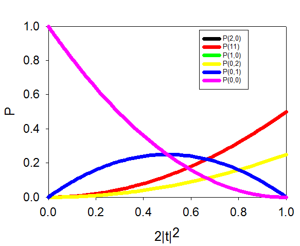
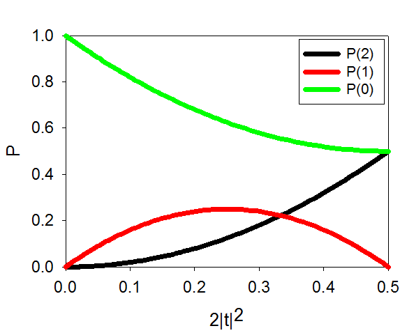

|
SOQCS
RV 1.5
Stochastic Optical Quantum Circuit Simulator
|


|
|
SOQCS
RV 1.5
Stochastic Optical Quantum Circuit Simulator
|
|
EXAMPLE 9: Dielectric as a balanced beamsplitter with losses
Calculation of the output probabilities for a small dielectric film acting as a beamsplitter. The resulting values coincide with the ones reported in ref. [1].
Description:
We consider a circuit made of single dielectric thin film as studied in [1]. We reproduce numerically the results presented in Figs 2 and 3 of the same ref. [1] obtained by means of analytical calculations to validate the loss model in SOQCS. Each of the figures correspond to the cases where two photons are injected in the dielectric from the same direction or from opposite ones. Here, both situations are considered as two different input channels therefore we plot the different outcome probabilities as function of the transmission amplitude |t| for each of the two cases | 2, 0 > and | 1, 1 >.
[1] Stephen M. Barnett, John Jeffers, Alessandra Gatti, and Rodney Loudon. Quantum optics of lossy beam splitters. Phys. Rev. A, 57:2134–2145, 1998.
| const | int och0 Occupation channel 0 |
| const | int och1 Occupation channel 1 |
| const | cmplx C Complex constant t=C*r |
| const | cmplx maxt Maximum transmission amplitude |
| const | int N Maximum number of photons |
Test 1 Output example t=ir and input |2,0>:
| Test 1 |
|---|

|
Test 2 Output example t=r and input |1,1>:
| Test 2 |
|---|

|
Note that conservation of probability imposes |t ± r|2<=1. It is for that reason that in Test 2 we can not have physical values larger than 2|t|2=0.5 because |t + r|2>1 will break the previous conservation of probability condition.
Maynooth Univeristy

Copyright:
Copyright © 2023 National University of Ireland Maynooth,
Maynooth University. All rights reserved.
The contents and use of this document and the related code
are subject to the licence terms detailed in LICENCE.txt
Jiri Vala
e-mail:
jiri.vala@mu.ie
Authorship:
Javier Osca Cotarelo
e-mail:
soqcslib@gmail.com